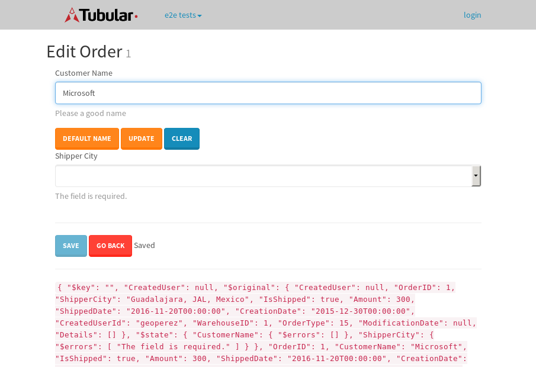

tbColumn.Grid Sorting - 34.216sTests: 5Skipped: 0Failures: 0 should sort data in ascending order then on descending order when sorting by Order Id column - 6.711sTests passed: 100.00%should order data in ascending order when click-sorting an unsorted text column - 6.753sTests passed: 100.00%should order data in descending order when click-sorting an ascending-sorted text column - 6.641sTests passed: 100.00%should order data in ascending order when click-sorting an unsorted date column - 7.563sTests passed: 100.00%should order data in descending order when click-sorting twice an unsorted date column - 6.546sTests passed: 100.00%
tbColumn.Grid Components - 3.992sTests: 3Skipped: 0Failures: 0 should print grid - 1.494s***Skipped***Tests passed: 0%should export grid - 1.241s***Skipped***Tests passed: 0%should show column selector - 1.257sTests passed: 100.00%
tbSingleForm.Form validations - 2.796sTests: 2Skipped: 0Failures: 0 should have an empty required field - 1.821sTests passed: 100.00%should not be able to click on save - 0.975sTests passed: 100.00%
Tubular Filters.tbColumnFilter - 118.824sTests: 12Skipped: 0Failures: 0 should cancel filtering when clicking outside filter-popover - 9.812sTests passed: 100.00%should disable Value text-input for "None" filter - 7.226sTests passed: 100.00%should disable apply button for "None" filter - 6.864sTests passed: 100.00%should decorate popover button when showing data is being filtered for its column - 13.487sTests passed: 100.00%should correctly filter data for the "Equals" filtering option - 9.818sTests passed: 100.00%should correctly filter data for the "Not Equals" filtering option - 8.97sTests passed: 100.00%should correctly filter data for the "Contains" filtering option - 9.368sTests passed: 100.00%should correctly filter data for the "Not Contains" filtering option - 9.334sTests passed: 100.00%should correctly filter data for the "Starts With" filtering option - 8.029sTests passed: 100.00%should correctly filter data for the "Not Starts With" filtering option - 7.328sTests passed: 100.00%should correctly filter data for the "Ends With" filtering option - 9.595sTests passed: 100.00%should correctly filter data for the "Not Ends With" filtering option - 7.384sTests passed: 100.00%
Tubular Filters.tbColumnDateTimeFilter - 146.352sTests: 12Skipped: 0Failures: 0 should cancel filtering when clicking outside filter-popover - 8.181sTests passed: 100.00%should disable Value text-input for "None" filter - 6.639sTests passed: 100.00%should disable apply button for "None" filter - 6.721sTests passed: 100.00%should clear filtering when clicking on Clean button - 19.864sTests passed: 100.00%should decorate popover button when showing data is being filtered for its column - 12.512sTests passed: 100.00%should correctly filter data for the "Equals" filtering option - 7.927sTests passed: 100.00%should correctly filter data for the "Not Equals" filtering option - 7.81sTests passed: 100.00%should correctly filter data for the "Between" filtering option - 13.803sTests passed: 100.00%should correctly filter data for the "Greater-or-equal" filtering option - 14.364sTests passed: 100.00%should corretlly filter data for the "Greater" filtering option - 12.79sTests passed: 100.00%should correctly filter data for the "Less-or-equal" filtering option - 12.226sTests passed: 100.00%should correctly filter data for the "Less" filtering option - 11.911sTests passed: 100.00%
Tubular Filters.tbColumnOptionsFilter - 89.905sTests: 3Skipped: 0Failures: 0 should cancel filtering when clicking outside filter-popover - 10.752sTests passed: 100.00%should decorate popover button when showing data is being filtered for its column - 12.171sTests passed: 100.00%should filter column-elements in accordance to the selected filter when selecting a single option - 55.233sTests passed: 100.00%
Tubular Filters.tbTextSearch - 49.927sTests: 5Skipped: 0Failures: 1 min-chars is not set - 1.01sTests passed: 100.00%should filter data in searchable-column customer name to matching inputted text, starting from 3 characters - 7.888sTests passed: 100.00%should filter data in searchable-column shipper city to matching inputted text, starting from 3 characters - 12.531sTests passed: 100.00%should show clear button when there is inputted text only - 6.611sTests passed: 100.00%should clear filtering when clicking clear button - 16.197sExpected 10 not to be 10.✗Tests passed: 0.00%
tbForm related components.tbCheckboxField - 7.899sTests: 2Skipped: 0Failures: 0 should save changes on "SAVE" - 3.971sTests passed: 100.00%should discard changes on "CANCEL" - 2.345sTests passed: 100.00%
tbForm related components.tbDropDownEditor - 15.712sTests: 5Skipped: 0Failures: 0 should set initial input value to the value of "value" attribute when defined - 2.111sTests passed: 100.00%should show the component name value in a label field when "showLabel" attribute is true - 1.858sTests passed: 100.00%should show a help field equal to this attribute, is present - 2.873sTests passed: 100.00%should submit modifications to item/server when clicking form "Save" - 5.25sTests passed: 100.00%should NOT submit modifications to item/server when clicking form "Cancel" - 2.881sTests passed: 100.00%
tbForm related components.tbTextArea - 21.973sTests: 7Skipped: 0Failures: 0 should set initial input value to the value of "value" attribute when defined - 3.946sTests passed: 100.00%should be invalidated when the number of chars is not in the range of "min" and "max" attributes - 2.986sTests passed: 100.00%should show the component name value in a label field when "showLabel" attribute is true - 1.912sTests passed: 100.00%should show a help field equal to this attribute, is present - 2.45sTests passed: 100.00%should require the field when the attribute "required" is true - 2.543sTests passed: 100.00%should submit modifications to item/server when clicking form "Save" - 3.47sTests passed: 100.00%should NOT submit modifications to item/server when clicking form "Cancel" - 3.054sTests passed: 100.00%
tbForm related components.tbDateEditor - 19.356sTests: 6Skipped: 0Failures: 4 should set initial date value to the value of "value" attribute when defined - 2.683sExpected false to be true.✗Tests passed: 0.00%should be invalidated when the date is not in the range of "min" and "max" attributes - 3.481sExpected false to be true.✗Expected 1 to be less than 1.✗Tests passed: 33.33%should show the component name value in a label field when "showLabel" attribute is true - 2.254sTests passed: 100.00%should show a help field equal to this attribute, is present - 2.499sTests passed: 100.00%should submit modifications to item/server when clicking form "Save" - 3.325sExpected false to be true.✗Tests passed: 0.00%should NOT submit modifications to item/server when clicking form "Cancel" - 3.082sExpected false to be true.✗Tests passed: 0.00%
tbForm related components.tbTypeaheadEditor - 21.778sTests: 7Skipped: 0Failures: 1 should show an options list when there is an API-info/component entered-data - 2.364sTests passed: 100.00%should select the option clicked - 2.729sTests passed: 100.00%should show a "delete" button when an option/match is selected, and delete the option if button is clicked - 4.285sFailed: each key must be a number of string; got boolean✗Tests passed: 50.00%should show a label value equal to the component name when "showLabel" attribue is true - 2.712sTests passed: 100.00%should require a value when "require" attribute is true - 2.75sTests passed: 100.00%should submit modifications to item/server when clicking form "Save" - 4.098sTests passed: 100.00%should NOT submit modifications to item/server when clicking form "Cancel" - 2.023sTests passed: 100.00%
tbForm related components.tbSimpleEditor - 25.017sTests: 9Skipped: 0Failures: 1 should set initial input value to the value of "value" attribute when defined - 2.374sTests passed: 100.00%should be invalidated when the number of chars is not in the range of "min" and "max" attributes - 3.1sTests passed: 100.00%should show the component name value in a label field when "showLabel" attribute is true - 1.763sTests passed: 100.00%should set input placeholder to the value of "placeholder" attribute - 2.362sTests passed: 100.00%should validate the control using the "regex" attribute, if present - 2.613sFailed: each key must be a number of string; got function✗Tests passed: 0.00%should show a help field equal to this attribute, is present - 2.466sTests passed: 100.00%should require the field when the attribute "required" is true - 2.838sTests passed: 100.00%should submit modifications to item/server when clicking form "Save" - 3.858sTests passed: 100.00%should NOT submit modifications to item/server when clicking form "Cancel" - 2.694sTests passed: 100.00%
tbForm related components.tbNumericEditor - 21.588sTests: 7Skipped: 0Failures: 0 should set initial component value to the value of "value" attribute when defined - 2.101sTests passed: 100.00%should be invalidated when the entered number is not in the range of "min" and "max" attributes - 3.871sTests passed: 100.00%should show the component name value in a label field when "showLabel" attribute is true - 1.992sTests passed: 100.00%should show a help field equal to this attribute, is present - 2.575sTests passed: 100.00%should require the field when the attribute "required" is true - 2.817sTests passed: 100.00%should submit modifications to item/server when clicking form "Save" - 3.903sTests passed: 100.00%should NOT submit modifications to item/server when clicking form "Cancel" - 3.42sTests passed: 100.00%
tbForm Connection Error - 2.368sTests: 1Skipped: 0Failures: 0 tbForm connection error functionality - 0.384sTests passed: 100.00%
tbForm Connection Error - 2.644sTests: 1Skipped: 0Failures: 0 tbForm connection error functionality - 0.403sTests passed: 100.00%
tbForm Connection Error - 3.507sTests: 1Skipped: 0Failures: 1 tbForm connection error functionality - 0.416sExpected '' to equal 'No data found'.✗Tests passed: 0.00%
tb Form Date Editor.tbDateEditor - 20.409sTests: 6Skipped: 0Failures: 0 should set initial date value to the value of "value" attribute when defined - 2.111sTests passed: 100.00%should be invalidated when the date is not in the range of "min" and "max" attributes - 3.249sTests passed: 100.00%should show the component name value in a label field when "showLabel" attribute is true - 1.761sTests passed: 100.00%should show a help field equal to this attribute, is present - 2.462sTests passed: 100.00%should submit modifications to item/server when clicking form "Save" - 3.96sTests passed: 100.00%should NOT submit modifications to item/server when clicking form "Cancel" - 4.174sTests passed: 100.00%
tbGridComponents - 11.186sTests: 6Skipped: 0Failures: 0 should add item with newRow method - 3.104sTests passed: 100.00%should add item with newRow method and cancel action - 0.815sTests passed: 100.00%should update item with tbSaveButton - 1.993sTests passed: 100.00%should update item with tbSaveButton and cancel action - 0.925sTests passed: 100.00%should remove item with tbRemoveButton - 1.269sTests passed: 100.00%should remove item with tbRemoveButton and cancel action - 1.143sTests passed: 100.00%
tbGridPager.navigation buttons - 9.491sTests: 1Skipped: 0Failures: 0 should perform no action when clicking on the numbered navigation button corresponding to the current-showing results page - 1.49sTests passed: 100.00%
tbGridPager.navigation buttons.first/non-last results page related functionallity - 4.011sTests: 2Skipped: 0Failures: 0 should disable "first" and "previous" navigation buttons when in first results page - 1.466sTests passed: 100.00%should enable "last" and "next" navigation buttons when in a results page other than last - 2.545sTests passed: 100.00%
tbGridPager.navigation buttons.last/non-first results page related functionallity - 3.989sTests: 2Skipped: 0Failures: 0 should disable "last" and "next" navigation buttons when in last results page - 1.892sTests passed: 100.00%should enable "first" and "previous" navigation buttons when in a results page other than first - 2.096sTests passed: 100.00%
tbGridPager.page navigation - 7.146sTests: 5Skipped: 0Failures: 0 should go to next results page when clicking on next navigation button - 1.608sTests passed: 100.00%should go to previous results page when clicking on previous navigation button - 1.848sTests passed: 100.00%should go to last results page when clicking on last navigation button - 1.294sTests passed: 100.00%should go to first results page when clicking on first navigation button - 1.205sTests passed: 100.00%should go to corresponding results page when clicking on a numbered navigation button - 1.191sTests passed: 100.00%
tbGridPagerInfo - 6.254sTests: 2Skipped: 0Failures: 0 should show text in accordance to numbered of filter rows and current results-page - 2.062sTests passed: 100.00%should show count in footer - 0.779sTests passed: 100.00%
tbHttp - 20.721sTests: 8Skipped: 0Failures: 0 should be authenticated - 2.549sTests passed: 100.00%retrieve data - 2.695sTests passed: 100.00%should not login bad credentials - 2.71sTests passed: 100.00%should have a refresh token - 2.731sTests passed: 100.00%should remove authentication - 2.235sTests passed: 100.00%get method-Is not authenticated - 2.493sTests passed: 100.00%post method-Is not authenticated - 2.798sTests passed: 100.00%should regenerate access token on post - 2.51sTests passed: 100.00%
LocalData.Grid Local Data Sorting - 10.071sTests: 4Skipped: 0Failures: 1 should order data in ascending order when click-sorting an unsorted text column - 2.647sTests passed: 100.00%should order data in descending order when click-sorting an ascending-sorted text column - 1.947sTests passed: 100.00%should correctly filter data for the "Contains" filtering option - 2.852sFailed: Element is not enabled✗Tests passed: 0.00%should correctly filter data for the "Contains" with ENTER key - 2.624sTests passed: 100.00%
OData.Grid OData Sorting - 51.984sTests: 7Skipped: 0Failures: 1 should order data in ascending order when click-sorting an unsorted numeric column - 8.731sTests passed: 100.00%should order data in descending order when click-sorting an ascending-sorted numeric column - 6.026sTests passed: 100.00%should order data in ascending order when click-sorting an unsorted text column - 4.688sTests passed: 100.00%should order data in descending order when click-sorting an ascending-sorted text column - 9.053sTests passed: 100.00%should order data in ascending order when click-sorting an unsorted date column - 8.891sTests passed: 100.00%should order data in descending order when click-sorting an ascending-sorted date column - 10.524sTests passed: 100.00%should correctly filter data for the "Contains" filtering option - 4.068sFailed: Element is not enabled✗Tests passed: 0.00%
tbPageSizeSelctor - 20.664sTests: 4Skipped: 0Failures: 0 should filter up to 10 data rows per page when selecting a page size of "10" - 3.889sTests passed: 100.00%should filter up to 20 data rows per page when selecting a page size of "20" - 2.758sTests passed: 100.00%should filter up to 50 data rows per page when selecting a page size of "50" - 6.682sTests passed: 100.00%should filter up to 100 data rows per page when selecting a page size of "100" - 5.442sTests passed: 100.00%
tbRowSelectable - 15.73sTests: 2Skipped: 0Failures: 0 selected rows - 9.058sTests passed: 100.00%unselected rows - 5.111sTests passed: 100.00%
tbSingleForm.Form fields - 19.464sTests: 7Skipped: 0Failures: 1 should load correct info - 1.521sTests passed: 100.00%should change customer name - 1.222sTests passed: 100.00%should save it - 4.575sFailed: Element is not enabled✗Tests passed: 0.00%should clear the inputs - 1.365sTests passed: 100.00%should update - 1.697sTests passed: 100.00%should reset editor - 5.12sTests passed: 100.00%should not save if not Changes - 3.962sTests passed: 100.00%
tbSingleForm.Form validations - 2.04sTests: 2Skipped: 0Failures: 0 should load correct info - 1.063sTests passed: 100.00%should not be able to click on save - 0.977sTests passed: 100.00%
tubularTemplateServiceModule.#createColumns() - 1.783sTests: 2Skipped: 0Failures: 0 should return an array with 7 elements - 0.955sTests passed: 100.00%first element should match - 0.827sTests passed: 100.00%
tubularTemplateServiceModule.#generateFieldsArray() - 1.794sTests: 2Skipped: 0Failures: 0 should return an array with 7 elements - 0.876sTests passed: 100.00%first element should match - 0.918sTests passed: 100.00%
tubularTemplateServiceModule.#generatePopup() - 0.768sTests: 1Skipped: 0Failures: 0 should html match - 0.768sTests passed: 100.00%
tubularTemplateServiceModule.#getEditorTypeByDateType() - 4.34sTests: 4Skipped: 0Failures: 0 should be tbDateTimeEditor - 0.749sTests passed: 100.00%should be tbNumericEditor - 0.933sTests passed: 100.00%should be tbCheckboxField - 1.704sTests passed: 100.00%should be tbSimpleEditor - 0.953sTests passed: 100.00%
tubularTemplateServiceModule.#generateForm() - 2.872sTests: 3Skipped: 0Failures: 0 should single layout html match - 0.805sTests passed: 100.00%should two columns layout html match - 1.21sTests passed: 100.00%should three columns layout html match - 0.857sTests passed: 100.00%
tubularTemplateServiceModule.#generateCells() - 0.763sTests: 1Skipped: 0Failures: 0 should html match - 0.763sTests passed: 100.00%
tubularTemplateServiceModule.#generateGrid() - 0.857sTests: 1Skipped: 0Failures: 0 should html match - 0.857sTests passed: 100.00%


{kind=link}